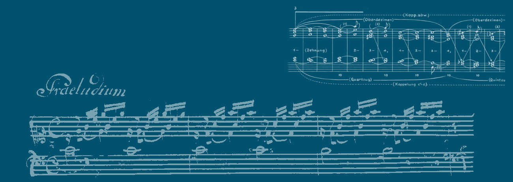
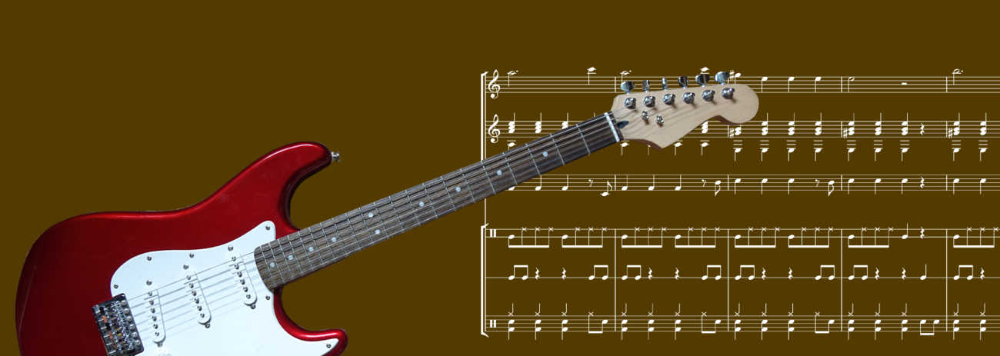
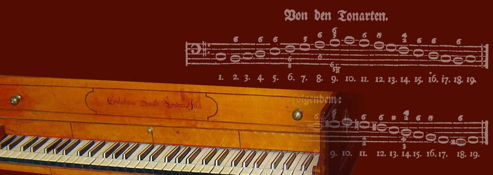

musikanalyse
.net
Archiv — Alle Inhalte jetzt auf
openmusic.academy



Diese Seite ist ein Archiv.
musikanalyse.net war
die führende deutschsprachige Adresse für Musiktheorie und Analyse im Internet
. Alle Tutorials wurden zur
Open Music Academy
migriert — ein Klick auf einen Titel leitet Sie automatisch dorthin weiter.
Grundlagen
Satzmodelle
Form
Stilübungen (Tonsatz)
Analysen
Methoden
Terminologie
Improvisation
Didaktik
Popularmusik & Geschichte
Kein Tutorial gefunden.
Grundlagen
Akkorde mit drei Tönen (Dreiklänge)
Die Größe und Qualität der Intervalle
Intervalle bestimmen
Die Prime und die Oktave
Sekunden
Terzen
Die Quarte
Die Quinte
Sexten
Septimen
Übermäßige Quarte (Tritonus) und verminderte Quinte
Das abendländische Tonsystem
Tonleitern und Skalen
Der Quintenzirkel und verwandte Vorstellungen
Kann man mit dem Quintenzirkel Mozart verstehen?
Noten lesen lernen
Die Kadenz (als Schlusswendung)
Signalakkorde der Kadenz
Kadenzen üben (stilistisch)
Septakkorde (diatonisch) und ihre Auflösungen
Der Neapolitaner
Der übermäßige Quintsextakkord
Dominanten und die Sixte ajoutée
Vagierende und symmetrische Akkorde
Der verminderte Septklang bzw. Septakkord
Die Tonika mit Grundton im Bass
Die Tonika mit Quinte im Bass und der Vorhalts-Quartsextakkord
Kontrapunkt 1 (16. Jahrhundert) – Eine Einführung
Kontrapunkt 3 (16. Jahrhundert) – Zum zweistimmigen Kontrapunkt
Kontrapunkt 2 (17. Jahrhundert) – Synkopendissonanz
Intonation und historische Stimmungen
Satzmodelle
Satzmodelle (Sequenzen)
Die Oktavregel (Regola dell'ottava)
Die Quintfallsequenz in der Zweistimmigkeit
Die Quintfallsequenz mit Synkopenkette
Monte – Fonte – Ponte
Das I-x-V-I-Modell
Der Parallelismus (Pachelbel-Modell)
L'Aria di Fiorenza
Der Lamentobass
Cadentia duriuscula
Die phrygische Wendung (Fragetopos)
Motivo di Cadenza (Unterquintmodulation)
Die Oberquintmodulation
Zirkelmodelle (1) – Das Wegweiser-Modell
Zirkelmodelle (2) – Modell ohne Namen (Omnibus)
Form
Formenlehre I – Wiederholung, Variante, Kontrast
Formenlehre IV – Periode und Satz
Formenlehre V – Lautstärkemodelle zur Sinfonie
Formenlehre VI – Beispiele der Pop- und Rockmusik
Was ist eine Formfunktion?
Die Formfunktion Bridge
Der Fortspinnungstypus
Die Kadenz (als Formmodell)
Rondo
Das SRDC-Schema
Formbegriffe der Pop- und Rockmusik
Einführung in die Formanalyse (am Beispiel Sonate)
Kadenzgliederung nach H. Chr. Koch als Methode der Formanalyse
Erwin Ratz und die funktionelle Formenlehre
Stilübungen (Tonsatz)
Stilübungen – Allgemeine Überlegungen
Liedsatz, Choralsatz und Kantionalsatz
Choralsatz 1 – Kadenzen schreiben
Choralsatz 2 – Arbeitsschritte zur vierstimmigen Ausarbeitung
Invention – Stilübung und Analyse
Kontrapunkt 4 (16. Jahrhundert) – Zum mehrstimmigen Kontrapunkt
Kontrapunkt 5 (16. Jahrhundert) – Fuggir la cadenza
Kontrapunkt 7 (16. Jahrhundert) – Zur formalen Gestaltung
Kanonmodelle als Struktur
Passacaglia 1 – Grundlagen
Passacaglia 2 – Formale Gestaltungen
Fuge 1 – Themenbeantwortungen
Fuge 2 – Schreiben einer Exposition
Fuge 3 – Zwischenspiele und formale Gestaltung
Fuge 4 – Schlussgestaltungen
Fuge 5 – Zusammenfassung der Arbeitsschritte
Sonate 1 – Ausarbeitung von Hauptsatz und Überleitung
Sonate 2 – Ausarbeitung von Seitensatz und Schlussgruppe
Sonate 3 – Gestaltung einer Durchführung
Sonate 4 – Ausarbeitung einer Reprise
Sonate 5 – Zusammenfassung und Musterlösung
Songwriting 1 – Die Drums
Songwriting mit Beethoven – Eine Anleitung
Songwriting mit Schubert – Eine Anleitung
Analysen
»Mein Herz« von Dieter Bohlen
»Crying in the Rain« (Whitesnake)
»Der Zwerg« von Franz Schubert
Universale Harmoniemodelle abendländischer Tonalität
Schuberts »Winterreise« – Satztechnik und Bedeutung (1)
Tosca – Eine Einführung
Kontrapunktische Modelle zur Analyse tonaler Musik
Musikalischer Witz bei J. Haydn
Methoden
Zu Methoden der musikalischen Analyse
Analysemethoden – Ein Überblick
Analysemethoden (Pop/Rock) – Ein Überblick
Die »sinfonische Welle« als Methode der Analyse
Schenker reloaded – Graphische Analysen nach H. Schenker
Sequenzen und die Funktionstheorie
Zur Pc Set Analyse (Best Practice)
Terminologie
Was ist eine Modulation?
Alte Tonarten (Modi)
Was ist ein Topos?
Manierismus in der Musik
Modell, Idealtypus, Hermeneutik und die Funktionale Analyse
Kontrapunkt und Harmonielehre
Theorie und Methode
Theorie & Praxis
Die Überleitung (Recherche)
Improvisation
Kontrapunkt 6 (16. Jahrhundert) – Improvisation zwei- und dreistimmiger Sätze
Menuette improvisieren
Satzmodelle – Improvisieren kleinerer Formen
Didaktik
Musikhören und Erwartung – Ein Modell zur Didaktik
Die Kadenz (als Kanon)
Didaktik der Popmusik am Beispiel des Parallelismus
Urheberrecht – Fischer ./. Frankfurter
Popularmusik & Geschichte
Das Schlagzeug